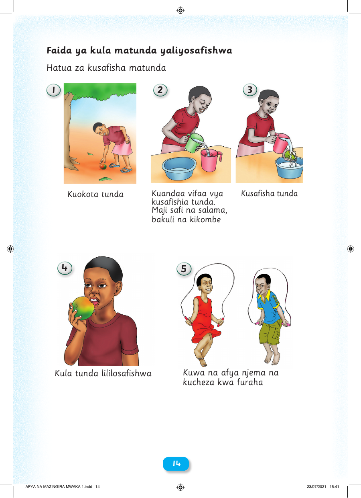

Faida ya kula matunda yaliyosafishwa Hatua za kusafisha matunda 1 2 3 Kuokota tunda Kuandaa vifaa vya Kusafisha tunda kusafishia tunda. Maji safi na salama, bakuli na kikombe 4 5 Kula tunda lililosafishwa Kuwa na afya njema na kucheza kwa furaha 14 AFYA NA MAZINGIRA MWAKA 1.indd 14 23/07/2021 15:41